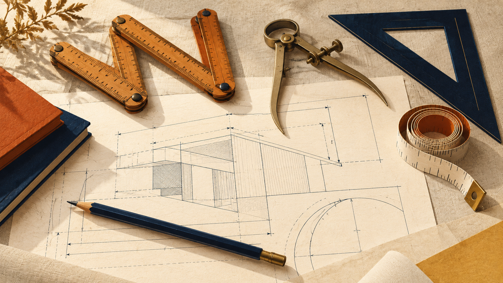
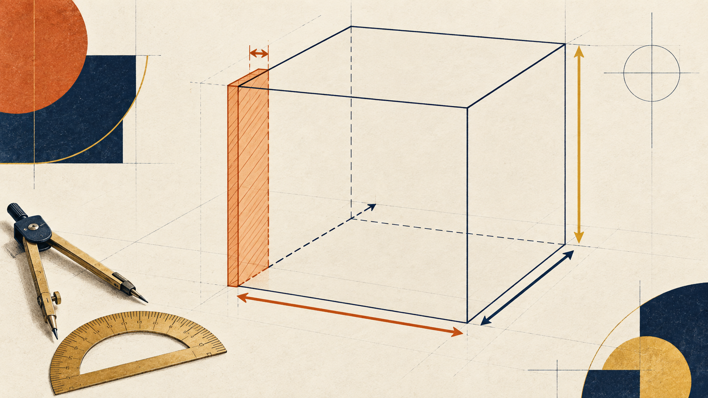
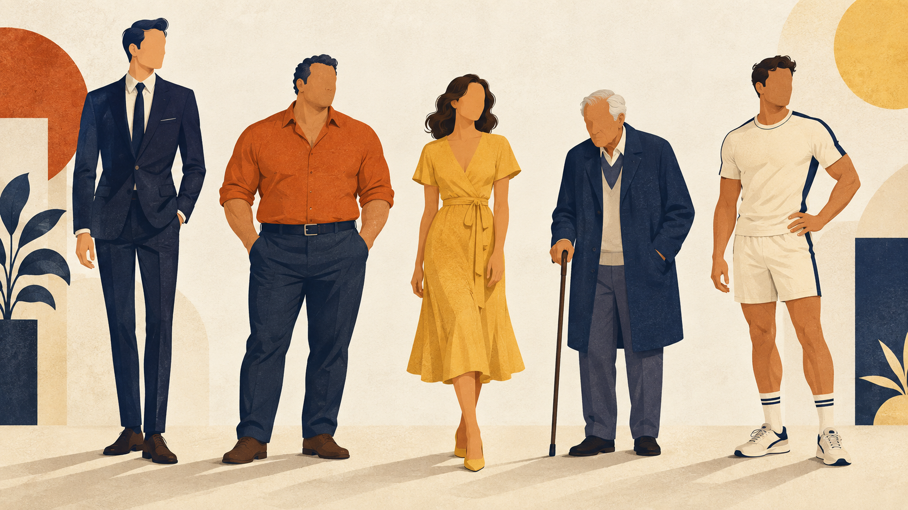
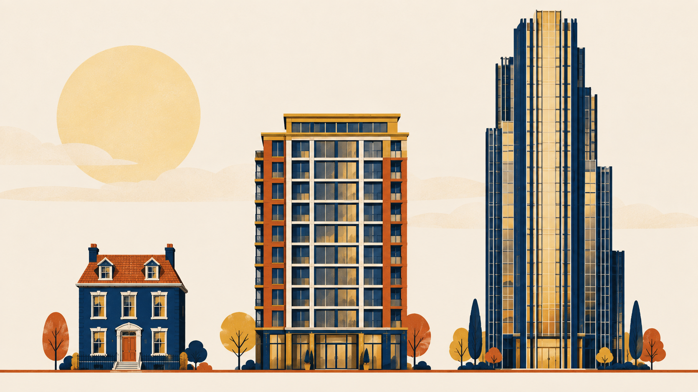
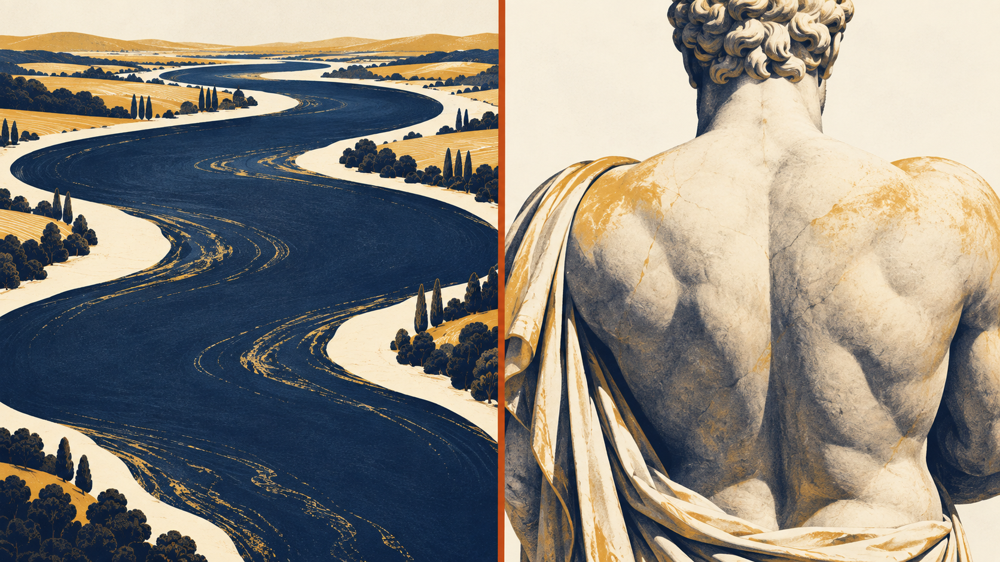
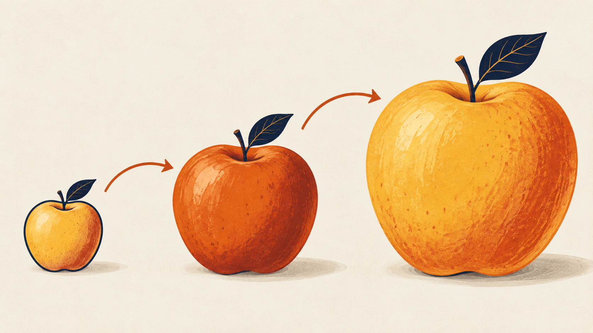
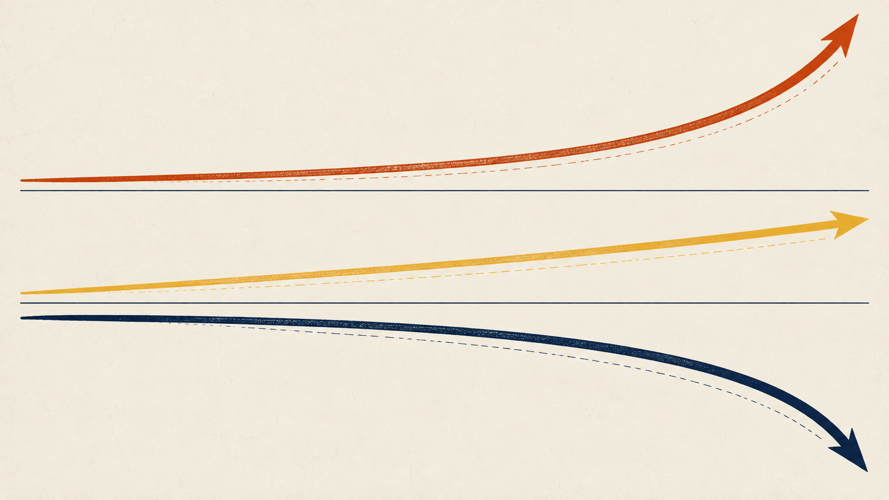
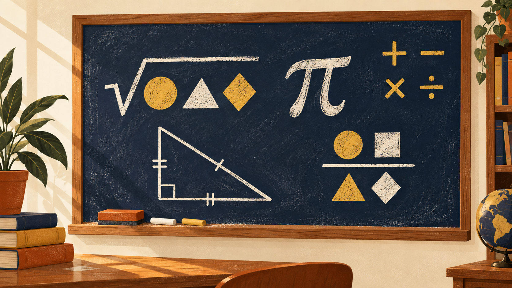

Adjective → Noun · Measurements · Comparisons
Полный курс из 30 секций: 4 суффиксные модели адъектив→существительное; шесть базовых свойств объекта; метрические и имперские единицы; как говорить о людях, вещах и зданиях; сравнения без калек; тонкие пары broad/wide и deep/thick; formal-register upgrade для эссе и олимпиад. Reading · Listening · Dialogues · Speaking.

Match · соедини прилагательное с его существительным
-th — самая старая, английская, германская линия. Многие пары меняют внутреннюю гласную: long → length, strong → strength, wide → width, deep → depth. Гласная o часто становится e, i становится e. Исключения: high → height (без -th!), dry → drought (нерегулярно).Adjective
Noun
Suffix Family Sort · распредели 16 слов по 4 суффиксам
-th — базовые физические свойства (long, wide, high, warm, deep) ·
-ness — качества характера (happy, kind, dark, soft) ·
-ity/-ty — латинские корни (stupid, curious, honest, able, safe) ·
-ance/-ence — от глаголов и причастий (important, patient, distant, silent, different).
Word bank · 16
-th
-ness
-ity / -ty
-ance / -ence
Full-table type-in · 20 слов на все 4 модели
Как запомнить · мнемонические подсказки
-th · физика
- Мера: длина, ширина, глубина, высота, толщина
- Природа: warm/warmth, true/truth
- Меняет гласную: long→length, strong→strength
- Ловушка: high дает height, но tall тоже даёт height (не tallness)
-ness · характер
- Прилагательные-эмоции: happy, kind, sad, dark
- y → i: happy → happiness, silly → silliness
- Самая «продуктивная» модель — от почти любого adj можно
- Синоним для абстрактных качеств
-ity / -ty · латинский корень
- Слова латинского происхождения: curious, honest, able, safe
- Часто меняет окончание: able → ability (e отпадает)
- Часто есть двойник на -ness (kindness), но -ity формальнее
-ance / -ence · глаголы
- От -ant / -ent прилагательных: important → importance
- Правило: -ant → -ance, -ent → -ence (silent → silence)
- Часто передаёт процесс или состояние (patience, silence)
-th · Feelings--ness · Latin--ity · Verbs--ance. Первая буква скажет модель — просто спроси себя «что это описывает?»Formal upgrade · перепиши с прилагательного на существительное
Six basic dimensions · шесть свойств любого объекта

| Свойство | Adjective | Noun | Question |
|---|---|---|---|
| высота | tall / high | height | How tall/high is …? |
| длина | long | length | How long is …? |
| ширина | wide / broad | width / breadth | How wide is …? |
| глубина | deep | depth | How deep is …? |
| толщина | thick | thickness | How thick is …? |
| вес | heavy | weight | How heavy is …? / How much does it weigh? |
Три конструкции описания
The river is 200 metres long. · The wall is 3 metres thick. · He is 1.85 metres tall.
The river has a length of 200 metres. · The tower has a height of 340 metres.
The length of the river is 200 metres. · The depth of the pool is 3 metres.
3 constructions · перепиши предложение тремя способами
Metric ↔ Imperial · единицы измерения
Метрические (мир, наука)
- mm / cm / m / km · millimetre → kilometre
- g / kg / t · gram → tonne
- ml / l · millilitre → litre
- m², m³ · square metre, cubic metre
- °C · degrees Celsius
Имперские (US, часть UK)
- inch (2.54 cm) · 12 in = 1 foot
- foot / feet (30.48 cm) · 3 ft = 1 yard
- yard (0.914 m)
- mile (1.609 km)
- oz / lb · 16 oz = 1 lb
- stone (UK, вес человека) · 1 st = 14 lb ≈ 6.35 kg
- °F · degrees Fahrenheit
Quick drill · конвертируй
Tall vs High · 10 вопросов
Listen · «Property Advertisement»
1 · The house has storeys.
2 · It was built in eighteen .
3 · The living room is metres long.
4 · The living room is metres wide.
5 · The ceilings are metres high.
6 · The wine cellar is metres deep.
7 · The cellar walls are a metre thick.
8 · The oak tree trunk has a of two metres.
Read · «The Blacksmith's Daughter»
Marta was the daughter of a blacksmith in a village where every man measured his strength against the anvil. Her father was famous for his patience — he waited five years to forge a single sword.
Marta herself was of medium height, but she had the breadth of shoulder her grandmother's family had passed down for three generations. In truth, she could lift more than most men in the village, and the depth of her curiosity about metals surprised even her father.
One autumn, a stranger came to the village. He was two heads taller than any local man, with the warmth of a Southern accent and the silence of someone who had travelled far. He asked for a knife 30 centimetres long and 2 millimetres thick — «no more, no less,» he said, with the distance of a man who measured everything precisely.
Marta made the knife in one week. Its length was exactly 30 cm, its blade 2 mm thick, its handle wrapped in the leather of a stag her father had hunted in his youth. The stranger paid twice the asking price and left.
Years later, Marta ran the forge alone. Travellers came from broader lands each season, and she measured every blade with the same slow patience her father had taught her.
Как говорить о людях · рост, комплекция, возраст

C1.1 · Рост
I'm 1.78 metres. · I'm five foot ten. · She's about 170 centimetres.
He's tall / short / of average height / of medium height.
C1.2 · Комплекция (build)
C1.3 · Возраст
He's a middle-aged man. — средних лет
She's elderly. — пожилая (вежливее чем old)
He's in his late forties / early fifties. — под 50 / чуть за 50
Dialogue · «At the Doctor's Office»
Describing figures · опиши 4 знаменитостей
6 вопросов о вещах
| Вопрос | Смысл |
|---|---|
| What's it made of? | Из чего сделано (материал) |
| What size is it? | Размер |
| What shape is it? | Форма (round · square · rectangular · oval · triangular) |
| What does it look like? | Как выглядит |
| How much does it weigh? | Сколько весит |
| What's it for? | Для чего |
What shape is it? — It's oval.
What's it for? — It's for keeping documents.
Order of adjectives · OSASCOMP
(opinion · size · age · shape · colour · origin · material · purpose = noun).
OSASCOMP MCQ · 5 расстановок
Как говорить о зданиях

E1.1 · Габариты
How high is the ceiling? — про потолок внутри
The building is 12 storeys high. — 12 этажей
It's a three-storey house. — attributive: единственное число! (нельзя «three storeys house»)
The floor space is 200 square metres. — площадь пола
The building dates back to the 18th century. — возраст
E1.2 · Типы зданий
E1.3 · Атмосфера
Dialogue · «Estate Agent Viewing»
Read · «My City's Tallest Building»
The tallest building in my city is a modern skyscraper made of glass and steel. It dates back to 2015 and reaches a height of 240 metres — that is, forty-eight storeys high, if you include the observation deck.
The lobby is remarkably spacious: the ceilings are seven metres high, and the floor space is nearly two thousand square metres. Marble columns of about a metre in diameter support the roof, and their thickness gives the room a sense of ancient temple rather than office block.
What makes this building unusual is not its height alone. Its width is also striking — 90 metres across at the base, tapering to 40 at the top. The architect said this narrowing was designed to reduce wind pressure, which at that altitude can shake even the sturdiest towers.
From the observation deck, you can see the whole city. The distance to the airport, twelve kilometres to the north, feels like a few blocks. On a clear day, in broad daylight, you can even make out the mountains fifty kilometres away.
Сравнения · полная теория
Subject + be + comparative + than + object pronounShe's shorter than her brother. · The tower is higher than the church.
F1.1 · Степень разницы
He's a bit / slightly taller than me. — чуть-чуть
He's a head taller than me. — на голову
He's 10 cm taller than me. — на 10 см
She's twice as tall as her son. — в два раза
Он старше меня на 5 лет → He's five years older than me. (✗ by five years)
Он выше меня на 10 см → He's 10 cm taller than me.
F1.2 · As … as (равенство и отрицание)
She's not as tall as her sister. — не такая высокая
It's not nearly as heavy as it looks. — далеко не такое тяжёлое
F1.3 · Superlative
This is the highest building in the city.
The Amazon is one of the longest rivers in the world.
«На X больше» · 10 задач
Listen · «City Guide» — 3 landmarks compared
1 · The cathedral dates back to the century.
2 · The skyscraper is metres tall.
3 · The skyscraper is taller than the cathedral.
4 · The cathedral is metres wide at the base.
5 · The town hall is slightly older than the cathedral by years.
6 · The bell tower is a taller than the main roof.
Wide vs Broad · тонкая пара

| wide | broad | |
|---|---|---|
| Что описывает | физическое расстояние между двумя краями | пространство / масштаб; часто в переносном смысле |
| Регистр | нейтральный, разговорный | формальный / книжный |
| Существительное | width | breadth |
Wide · физика
- The road is 4 metres wide.
- She has wide eyes.
- Open your mouth wide.
- a wide gap / a wide corridor
- a wide-open window
Broad · идея / плечи
- broad shoulders (✗ wide)
- a broad smile
- broad daylight
- a broad range of topics
- broad agreement / consensus
- in broad terms
Не взаимозаменяемы: broad shoulders (✗ wide) · wide open (✗ broad open) · open wide (✗ open broad).
Deep vs Thick · тонкая пара
Deep · вглубь / внутрь
- deep water · deep hole · deep well
- deep voice · deep sleep
- deep feelings · deep meaning
- The lake is 40 metres deep.
Thick · от плоскости к плоскости
- thick wall · thick book · thick glass
- thick soup · thick hair · thick fog
- The ice is 2 cm thick.
- a thick layer of dust
Mixed tricky pairs · story cloze
The old monastery stood at the edge of a valley, protected by walls three metres . In daylight the monks worked in the gardens; at night they slept in cells with tiny windows and wooden doors.
The abbot, a man with shoulders and a voice, ran the place with quiet patience. Once a year a merchant visited with a smile and a horse loaded with books, some of them 500 pages .
«There is a road between men,» the abbot used to say, «and yet in terms we all walk the same direction.»
Error Hunt · найди и исправь
Story cloze · «The Tallest Man in the Valley»
Ivan grew up in a valley where a strange tower stood. It was 12 storeys (high/tall) and built of stones almost a metre (thick/deep). Everyone in the village measured their (noun of tall) against its shadow at noon.
Ivan's grandfather was famous for his (noun of strong) — he could lift a horse. But it was his (noun of patient) that made him a legend: he waited fifty years for the tower door to open.
When Ivan finally climbed the tower, he found a river 200 metres (long/length) and 3 metres (deep/depth) running through the top floor. On the wall was written: «Truth has a (noun of deep) that no measure can reach.»
He was taller than his father (на голову) by then, and the villagers said his shoulders had grown (broad/wide?) like an oak.
Speaking · 7 разных заданий
Каждое задание можно записать в приложении Voice Memos и переслать учителю в TG.
Iron Rules · 8 законов урока
- 1 Number + adjective: 10 metres wide, 5 feet tall, 2 kg heavy — число перед прилагательным.
- 2 Attributive singular: a three-storey house, a two-hour lesson, a five-year-old boy.
- 3 Degree of difference: без предлога — He's 10 cm taller than me (✗ by 10 cm).
- 4 Register upgrade: She is patient → Her patience is remarkable. C1 formal writing = noun.
- 5 Tall vs High: люди/деревья/здания = tall; потолок/полка/самолёт = high.
- 6 Broad vs Wide: broad — плечи/улыбка/тема/daylight; wide — окна/коридоры/eyes/open.
- 7 Deep vs Thick: deep — вниз/внутрь; thick — от края до края (стена, книга, суп).
- 8 Not as … as ≠ not so … like: She's not as tall as her sister (не «not so tall like»).
📦 Vocab Capsule · 35 слов урока
| EN | RU | Example |
|---|---|---|
| length | длина | The bridge has a length of 500 metres. |
| strength | сила | Her strength surprised everyone. |
| width | ширина | The corridor is only 1 metre in width. |
| depth | глубина | The depth of the lake is 40 metres. |
| height | высота | She's of average height. |
| breadth | ширина (книжн.) | the breadth of his knowledge |
| thickness | толщина | The thickness of the ice was 5 cm. |
| weight | вес | What's your weight? |
| patience | терпение | Her patience is remarkable. |
| distance | расстояние | Keep your distance. |
| warmth | тепло, теплота | the warmth of her voice |
| silence | тишина, молчание | He answered with silence. |
| importance | важность | the importance of sleep |
| honesty | честность | His honesty is refreshing. |
| curiosity | любопытство | her endless curiosity |
| ability | способность | the ability to concentrate |
| safety | безопасность | Safety comes first. |
| of medium build | среднего телосложения | He is of medium build. |
| stocky | коренастый | a stocky wrestler |
| slim / slender | стройный | a slim ballerina |
| well-built | крепкого телосложения | a well-built rugby player |
| a head taller | на голову выше | He is a head taller than me. |
| twice as … as | в два раза | She is twice as fast as him. |
| slightly / a bit | чуть-чуть | slightly heavier / a bit older |
| broad shoulders | широкие плечи | He has broad shoulders. |
| wide open | широко открыт | The gate was wide open. |
| in broad daylight | средь бела дня | It happened in broad daylight. |
| in broad terms | в общих чертах | In broad terms, the plan works. |
| a three-storey house | трёхэтажный дом | They bought a three-storey house. |
| skyscraper | небоскрёб | The skyscraper is 400 metres tall. |
| spacious | просторный | a spacious living room |
| cramped | тесный | a cramped little office |
| cosy | уютный | a cosy attic room |
| to date back to | восходить к, датироваться | The building dates back to 1852. |
| floor space | площадь пола | The floor space is 200 sq. m. |
Multipliers · Fold · Change · Math · Register · Chart Phrases
Отдельный блок справочника и тренажёра: как по-английски «в 2 раза больше / меньше», «увеличиться на», -fold family, математические конструкции, тонкости than I / than me, фразы для описания графиков в ЕГЭ Task 38 и ОГЭ, шаблоны compare & contrast эссе.
«В X раз больше / меньше» · 4 рабочие модели

①
twice / three times / X times + as [adj] as → twice as big as, three times as expensive as
②
twice / X times + [adj]-er / more [adj] → twice bigger (informal), three times more expensive
③
double / treble / quadruple (verbs & adj-less) → Prices doubled. Double the price.
④
half as [adj] as / a third / a quarter the size of → half as deep, a quarter the price of
❌ in 2 times bigger → ✅ twice as big / twice bigger
❌ on 2 times more → ✅ twice as much
❌ more on 50% → ✅ 50% more / higher by 50%
❌ 2 times less (controversial, logically wrong) → ✅ half as much / half the size
| RU | EN (best) | EN (alt) |
|---|---|---|
| в 2 раза больше | twice as big as | two times bigger than / double the size of |
| в 2 раза меньше | half as big as | half the size of |
| в 2 раза дороже | twice as expensive as | double the price of / twice the price |
| в 2 раза дешевле | half as expensive as | half the price of |
| в 3 раза выше | three times as tall as | three times taller than / three times the height of |
| в 3 раза быстрее | three times as fast as | three times faster than |
| в 4 раза старше | four times as old as | four times older than |
| в 10 раз мощнее | ten times as powerful as | ten times more powerful than |
| вдвое длиннее | twice as long as | double the length of |
| вдвое меньше еды | half as much food | half the amount of food |
| треть длины | a third of the length | one-third the length of |
| четверть веса | a quarter of the weight | a quarter the weight of |
Drill · впиши правильный вариант
1 · The new office is as the old one. (в 2 раза больше)
2 · This smartphone is as mine. (в 3 раза дороже)
3 · Her flat is of ours. (в 2 раза меньше)
4 · The population between 1990 and 2020. (удвоилось)
5 · He eats as his brother. (в 2 раза больше)
6 · The journey takes than usual. (в 3 раза дольше)
7 · Our rent is of theirs. (четверть)
8 · The temperature is as yesterday. (в 2 раза выше)
Twofold · Threefold · N-fold · для академического письма
N-fold = прилагательное или наречие.
• as adj + noun: a twofold increase, a fivefold rise, a tenfold drop
• as adverb: Sales rose fourfold. Problems multiplied threefold.
• NB: onefold не используется. Hundredfold / thousandfold / manyfold — существуют (книжное).
• double (×2), treble / triple (×3), quadruple (×4), quintuple (×5) — глаголы и прилагательные, разговорно-нейтрально.
• twofold, threefold, fourfold — тот же смысл, но формально/академично. Чаще как adj + N.
• N-fold легко масштабировать: a 20-fold increase, но ❌ a 20-tuple increase не говорят.
| Factor | Adj (formal) | Verb (neutral) |
|---|---|---|
| × 2 | twofold | double |
| × 3 | threefold | triple / treble (UK) |
| × 4 | fourfold | quadruple |
| × 5 | fivefold | quintuple (rare) |
| × 10 | tenfold | — (use «ten times») |
| × 100 | a hundredfold | — (use «a hundred times») |
Examples · as used in ЕГЭ/IELTS writing
Drill · выбери правильное
Увеличиться · уменьшиться · банк глаголов и шаблонов

•
increase BY X / X% — на сколько изменилось: Sales rose by 15%.
•
increase TO Y / Y% — до какого значения: Sales rose to 80% of the market.
•
from X to Y — от начального до конечного: fell from 50 to 30
•
a + ADJ + rise/increase/fall in X — именная форма: a sharp rise in prices
| UP ↑ | DOWN ↓ | FLAT → |
|---|---|---|
| rise · rose · risen | fall · fell · fallen | remain stable |
| grow · grew · grown | drop · dropped | hold steady |
| increase | decrease | plateau |
| climb | decline | level off |
| go up | go down | stay the same |
| pick up | dip | stagnate (formal) |
| surge (sharp) | plunge (sharp) | — |
| soar (dramatic) | plummet (dramatic) | — |
| skyrocket (very sharp) | slump | — |
| jump (sudden) | slide / slip | — |
Adjectives for size & speed of change
Drill · chart cloze
1 · Between 2015 and 2020, the price of oil by 30%. (выросла)
2 · The number of tourists during the pandemic. (резко упало)
3 · After 2022, sales at around 50 million. (оставались стабильными)
4 · There was a in energy prices. (резкий рост)
5 · The population grew throughout the decade. (неуклонно)
6 · Unemployment fell last year. (на 2%)
7 · The company's profit in Q3. (удвоилась)
8 · There was a in sales in March. (небольшое снижение)
Математика по-английски · operations · powers · fractions

| Symbol | Short | Full phrase |
|---|---|---|
| + | plus | Two plus three equals five. |
| − | minus | Ten minus four is six. · subtract four from ten |
| × | times / multiplied by | Six times seven is forty-two. · Six multiplied by seven equals forty-two. |
| ÷ | divided by | Twenty divided by four is five. · Twenty over four equals five. |
| = | equals / is | X equals Y. · X is equal to Y. |
| ² | squared | Five squared is twenty-five. · Five to the power of two. |
| ³ | cubed | Three cubed is twenty-seven. · Three to the power of three. |
| xⁿ | to the power of n | Two to the power of ten is 1024. |
| √ | square root of | The square root of nine is three. |
| ∛ | cube root of | The cube root of eight is two. |
| √x | to extract / take the root | If we extract the square root of 16, we get 4. · Take the cube root of 125 to find 5. |
| x¹ᐟⁿ | the nth root of | The fifth root of 32 is 2. · Extract the nth root of x. |
| ½ | one half | half of them · a half-hour |
| ⅓ | one third | a third of the students |
| ¾ | three quarters | three-quarters of the class |
| ⅞ | seven eighths | seven-eighths of a pie |
| 0.5 | point five / nought point five (UK) | zero point five |
| % | per cent (UK) / percent (US) | twenty percent of · a 20% rise |
| ≈ | approximately / roughly / about | approximately equal to |
| ∞ | infinity | approaches infinity |
Read-aloud drill · произнеси и переведи
Than I vs than me · as X as I am · formal / informal
• than I / than I am — formal, academic, в эссе и официальных письмах
• than me — neutral / everyday, уместно в устной речи и личных письмах
• В ЕГЭ эссе → выбирай than I am или перепиши через as … as
| Informal (speech, friendly) | Formal (essay, exam) |
|---|---|
| He is older than me. | He is older than I am. |
| She is taller than him. | She is taller than he is. |
| We arrived earlier than them. | We arrived earlier than they did. |
| You know more than me. | You know more than I do. |
| She is as old as me. | She is as old as I am. |
| He is as tall as me. | He is as tall as I am. |
❌ She is not so tall like her sister → ✅ She is not as tall as her sister.
❌ as much tall as → ✅ as tall as
❌ as same as → ✅ the same as
🟨 Полный атлас as … as · 8 моделей
as + ADJ/ADV + as → равенство двух величин. 8 рабочих моделей ниже, от простой к продвинутой.| Pattern | Example | RU |
|---|---|---|
| as + adj + as | He is as tall as his father. | такой же высокий, как |
| as + adv + as | She works as hard as her brother. | работает так же усердно, как |
| as + much/many + N + as | I earn as much money as you do. | столько же, сколько |
| as + many + CountN + as | She has as many books as I do. | столько же, сколько |
| not as + adj + as | He is not as tall as I am. | не такой высокий, как |
| not so + adj + as (older) | She is not so patient as she used to be. | не так терпелива, как |
| twice/three times as + adj + as | The new flat is twice as big as the old one. | в 2 раза больше |
| half as + adj + as | He is half as fast as he was ten years ago. | вдвое медленнее |
🟩 Idioms with as … as · 10 устойчивых
| Idiom | Meaning |
|---|---|
| as old as the hills | очень древний |
| as cool as a cucumber | спокойный, невозмутимый |
| as busy as a bee | очень занятой |
| as blind as a bat | совершенно слепой |
| as light as a feather | лёгкий как пёрышко |
| as strong as an ox | сильный как бык |
| as quiet as a mouse | тихий как мышка |
| as proud as a peacock | гордый как павлин |
| as stubborn as a mule | упрямый как осёл |
| as clear as crystal / as mud (ironic) | кристально ясный / мутно (сарк.) |
🟦 Big drill · впиши форму as … as или not as … as
1 · My new laptop is my old desktop. (такой же быстрый)
2 · This book is the first one. (не такой интересный)
3 · She earns her manager. (столько же)
4 · He is his younger brother. (в 2 раза старше)
5 · The exam was we had feared. (не такой сложный)
6 · Today she is . (очень занята — idiom)
7 · The new model is the previous one. (вдвое дешевле)
8 · He works anyone in the office. (так же усердно)
«The more… the more» · parallel comparison
Degree of difference · «на столько-то»
number + comparative → 10 cm taller, 5 years older, twice as fast.
Also OK, formal/written:
by + number → taller by 10 cm, older by 5 years. Не используй в устной речи и в простых эссе.
Drill · informal или formal?
Describing Charts · ЕГЭ Task 38 · IELTS Task 1 · bank of phrases
① Introduction · «что перед нами»
- The pie chart / bar chart / line graph / table shows / illustrates / presents / depicts…
- The diagram provides information about / gives data on…
- According to the chart, …
- As can be seen from the diagram, …
- The data in the table relates to / compares…
② Overview · «главное впечатление»
- Overall, the most striking feature is that …
- It is clear from the data that …
- The main trend is …
- At first glance, we can see that …
- Generally speaking, …
③ Specific data · «цифры»
- X accounts for Y% / makes up Y% / represents Y%.
- The largest / smallest share belongs to …
- X is followed closely by Y, with Z%.
- The figure stood at X / reached X / peaked at X.
- The lowest point was recorded in …, at X.
④ Comparison · «сравнение»
- X is twice as popular as Y.
- X is three times higher than Y.
- X exceeds Y by 15 percentage points.
- Y lags behind X by a wide margin.
- X and Y are roughly equal / comparable / similar.
- Compared to Y, X is …
- In contrast to / Unlike Y, X …
- The gap between X and Y widens / narrows over time.
⑤ Trends · «движение во времени»
- There is a steady increase in …
- X rose sharply from Y to Z between 2020 and 2026.
- The number of X peaked at Y in 2024.
- Y bottomed out at Z before rebounding.
- After a sharp drop, X levelled off.
- X showed a dramatic surge / a gradual decline.
- From 2020 onwards, X fluctuated around Y.
⑥ Conclusion · «вывод»
- To sum up / In conclusion, the data suggests …
- These figures indicate / imply / suggest that …
- In summary, the trends point to …
- All in all, the diagram clearly demonstrates …
- From the data presented, it can be concluded that …
Шаблоны · ЕГЭ Task 38 · ОГЭ 35 · compare & contrast
🅰 ЕГЭ Task 38 · 200-250 слов · 5 параграфов
The ___ chart depicts the data on ________ among ________ in ________. The information is presented as percentages / absolute figures / years. The aim of this report is to describe the main features and compare the two most striking categories.
The most popular / striking category is ________, which accounts for ________. By contrast, the least popular is ________, representing only ________. It is worth noting that ________ is followed closely by ________, with ________.
Interestingly, ________ is twice as high as ________ / three times as popular as ________. The gap between them is around ________ percent, which is a ________ difference. Compared to ________, ________ shows a ________ trend.
These figures may be explained by ________. Personally, I believe that ________, because ________. In addition, cultural / economic / technological factors also play a role.
In conclusion, the chart clearly demonstrates that ________. These findings suggest that ________ remains the leading / most relevant option for ________.
🅱 ОГЭ 35 · personal letter · 100-120 слов
Main point 1: In my family / city / class, ________ is twice as ________ as ________.
Main point 2: However, ________ is a bit shorter / smaller / slower, which makes it ________.
Main point 3 (opinion): Personally, I prefer ________ because ________.
Closing: Write back and tell me which one you'd choose!
🅲 Universal compare & contrast connectors
🅳 Mini vocab · 20 рабочих слов для сравнений в эссе
| EN | RU |
|---|---|
| to outnumber | превосходить по количеству |
| to outperform | превосходить по результатам |
| to lag behind | отставать |
| to catch up with | догонять |
| to overtake | обгонять |
| a gap | разрыв |
| a disparity | несоответствие |
| a margin | отрыв, перевес |
| a share | доля |
| a proportion | доля, пропорция |
| respectively | соответственно |
| approximately | приблизительно |
| roughly | примерно |
| slightly | незначительно |
| considerably | значительно |
| to witness a rise | наблюдать рост |
| to see a decline | видеть снижение |
| to peak | достичь пика |
| to bottom out | достичь дна |
| to plateau | выйти на плато |